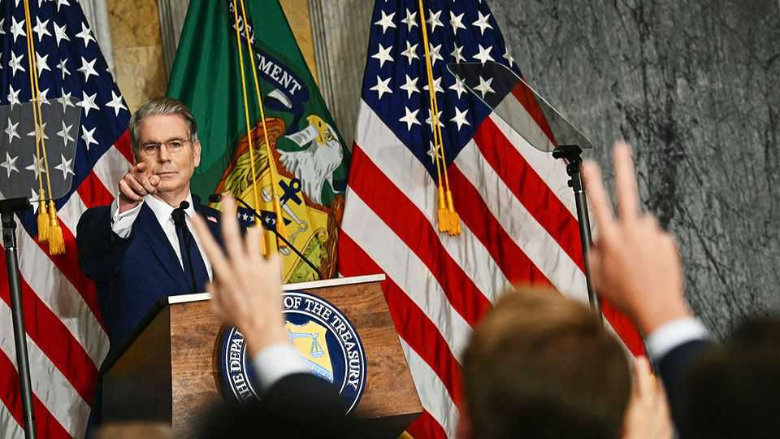

Politics

Aug 27th 2026
Scott Bessent, America's treasury secretary, announced a new set of sanctions against Iran that he claimed would be “the single greatest financial offensive ever marshalled against an adversary”. He also threatened secondary measures against Iran’s trading partners but said they would be given time to comply. Iran vowed to retaliate, warning that “not a single drop of oil” would leave the Gulf if the pressure continued. China, which last year bought 90% of Iranian oil exports, said that its trade with Iran “should not be interfered with or disrupted”.
The commander of the Syrian Democratic Forces, a Kurdish-led militia, said it would disband and merge with the Syrian army. The SDF was once America’s main partner in fighting Islamic State in Syria and controlled the country’s north-east for more than a decade. Meanwhile, America removed Syria from its list of state sponsors of terrorism, lifting a barrier to private investment in the country.
Two UN peacekeepers were killed in an ambush while out on patrol in South Sudan’s Jonglei state. Several other people were injured. The UN believes the patrol may have been deliberately targeted. Aid workers are regularly attacked in South Sudan, which has been teetering on the brink of civil war for months, but attacks on peacekeepers are rare.
Muhoozi Kainerugaba, the head of Uganda’s armed forces, said he would run in an election to succeed Yoweri Museveni, his father, as president in 2031. General Kainerugaba has played a key role in helping his father, who has ruled Uganda since 1986, hang on to power. He is notorious for his social-media posts, including one from 2022 in which he talked about invading Kenya (some of the posts were in jest).
In Haiti around 50 people were killed when gangs attacked Kenscoff, a hillside neighbourhood in Port-au-Prince at a strategic point above the capital. More than 3,000 people have been killed in Haiti in the first six months of this year, according to the UN. The government is still hoping to hold an election in December, its first in a decade.
Bolivia’s centrist president, Rodrigo Paz, appointed a new minister for the economy, after the legislature ousted the previous minister. Mr Paz was keen to signal that his market-reform policies aimed at strengthening public finances would continue. Nationwide protests erupted in May and June against the government’s austerity agenda.
Canada was on the verge of an all-out trade war with the United States, after Mark Carney, the prime minister, rejected a trade deal that had been endorsed by Donald Trump. In a speech to Canadians, Mr Carney said that America had “asked too much and they offered too little”. Canada is threatening to impose $20bn-worth of retaliatory duties on American goods on September 8th, which allows some time for a solution to be reached. Mr Trump is threatening to raise tariffs to 50% on vehicles and car-part imports from Canada. He is also talking about renaming Lake Ontario “Lake America”.
Darline Graham won the Republican primary run-off for the South Carolina Senate seat that had been held by her brother, Lindsey Graham, who died in July. Endorsed by Mr Trump, Ms Graham took 52% of the vote in the primary and is now seeking victory in November’s midterms. She is heavily favoured to win.
In an emergency sitting outside its regular term, the Supreme Court decided that the Trump administration could for now continue with its plans to restrict postal voting while a lower court considers the issue. Under the plan the Postal Service would deliver ballots only in states that shared electoral lists with it. It is unclear whether the system would be in place for November’s midterm elections, and it is bound to face other legal challenges.
The Trump administration suspended applications for immigrant visas globally while consular officers are trained to screen out applicants who might need public assistance. It has also begun revoking visas issued to people who entered the United States on short-term business or tourism visas and subsequently claimed asylum. Around 200,000 such visas could be cancelled. Meanwhile, the Department of Homeland Security proposed charging $103,265 for H-1B visas for skilled workers. A similar proposal was struck down by a federal court in June.
The Pentagon sacked the editor and Middle East correspondent of Stars and Stripes, the official daily newspaper for America’s armed forces. Erik Slavin was fired as editor-in-chief for insubordination, after he raised concerns in a TV interview about censorship of news for service members. The correspondent, Lara Korte, also appeared in the programme. The Stars and Stripes is editorially independent of the War Department.
Ukraine expanded its attacks on Russian e-commerce sites by targeting logistics hubs owned by Ozon, Russia’s second-largest online retailer. Over the past month Ukraine has carried out strikes on Wildberries, the biggest e-retailer, part of a strategy to bring the war home to ordinary Russians and further disrupt the Russian economy. Meanwhile, the European Commission approved another €6.1bn ($7.1bn) in aid to Ukraine to buy air-defence systems and other weaponry.
Mykhailo Fedorov, who was ousted as Ukraine’s defence minister by Volodymyr Zelensky, took another shot at his former boss, blaming an “absence of vision” that has led to Ukraine “gradually, slowly losing” the war. Mr Fedorov stunned Ukrainians recently by calling for an election.
On his first overseas trip as Britain’s prime minister, Andy Burnham went to Kyiv, where he chaired a meeting of the “coalition of the willing”, 34 countries that have pledged support to Ukraine. Mr Burnham announced that the Ukrainians would be allowed to access classified information on SCALP, a long-range missile, so that it can be built in Ukraine. The Kremlin said Britain was adding “fuel to the fire”, to which Mr Burnham responded, “Who started the fire? That’s the question, isn’t it?”
The American Treasury designated Palestine Action, which is based in Britain, as a terrorist group and imposed sanctions on it. Palestine Action has also been proscribed in Britain as a terrorist outfit, after four of its members were convicted of attacking the premises of an Israeli defence firm, hitting a policewoman with a sledgehammer in the process and fracturing her back (Britain’s Supreme Court is reviewing the proscription). Hundreds of its supporters have been arrested at pro-Palestinian demonstrations in London. Mr Bessent, the treasury secretary, said the sanctions were a warning to “far-left extremists, their fronts and their enablers”.
In a parliamentary election in Kazakhstan Kassym-Jomart Tokayev tightened his grip on power. Adilet, a new party stuffed full of loyalists to the president, got over 70% of the vote, weakening allies of Nursultan Nazarbayev, the former president. Constitutional changes have reduced the Kazakh parliament to one chamber.

Hundreds of people, including many foreign travellers, were missing following flash floods and mudslides in Nepal, close to the border with Tibet, where heavy casualties were also reported. Scores of people were confirmed to have died. The floods engulfed towns and villages, sweeping buildings and bridges away. It is thought a glacier may have partly collapsed, hurtling huge amounts of ice into rivers and causing water levels to surge.
The UN Human Rights Office issued a report on Myanmar, where human rights have reached “a new low”, in part because of the “ever-worsening brutal abuse of the Rohingya population”. Unrelenting violence, an unregulated economy and the absence of the rule of law have meant that Myanmar’s people are living in “untold misery”, said the UN.
At least 14 infants were killed in a fire that broke out in the mothers and children ward of a hospital in Islamabad, the capital of Pakistan.
Tributes were paid to Dolly Parton, who died at the age of 80. The singer-songwriter’s career spanned six decades, during which she took country music from rural America to the mainstream, writing over 3,000 songs along the way. Born in Tennessee to a mother who bore 12 children and a father who was once a sharecropper, Ms Parton’s first hit came in 1967 with “Dumb Blonde”. She once quipped that “I know I’m not dumb, and I’m not blonde either.” Her husband of 59 years died last year.